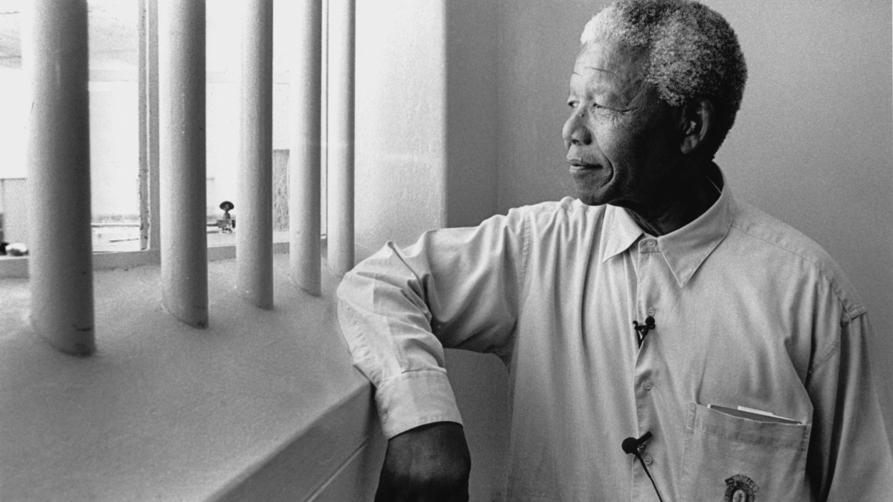

Nelson Mandela
Antiapartheid activist, First Black President of South Africa(1994-1999)

Nelson Mandela visited the prison where he was.
Here's a time line of Nelson Mandela
- 1918- Born on July 18 in the village of Mrezo in the Eastern Cape
- 1930- His father died when He was 12 years old
- 1941- He ran away to Johannesburg
- 1943- He completed his Bachelor of Art through the University of South Africa and went back to University College of Fort Hore where He was expelled for joining in a student protest.
- 1944- Joined African National Congress
- 1944- Married Walter Sisulus Cousin, a nurse . They had two sons and two daughters.
- 1952- He began studying an LLB at the University of the Watersrad By his own admission(money) but later left without graduating since He was in financial burden
- 1952- He and Oliver Tambo established South Africa first black LAW FIRM , Mandela & Tambo.
- 1956- Mandela was arrested in countryside police swoop
- 1958- Mandela and Evelyn Mase divorced
- 1958- Married a social worker, Winnie Madikizel. They had two daughters
- 1960- April 8: South Africa first State of Emergency and banned of ANC and Pan Africanist Congress (PAC)
- 1962- On January 11, adopted the name David Motsamye. He secretly left South Africa. He travelled arround Africa and England to gain support for the arm struggle.
- 1964- June 11 was sentenced to life imprisonment
- 1986- He obtained his LLB certification while serving his last months in prison.
- 1990- February 11. He was released from prison.
- 1991- He was elected ANC President.
- 1993- He won the Nobel Peace Prize.
- 1994- On May 10, He was inauguranted as South Africa's first democratically President.
- 1996- Mandela and Winnie divorced
- 1998- On his 80th birthday, He married Graca Machel, his third wife
- 1999- Mandela stepped down after one term as President
- 2013- He died at his home in Johannesburg
I have fought against white domination and I have fought against black domination. I have cherished the ideal of a democratic and free society in which all persons live together in harmony and with equal opportunities. It is an ideal which I hope to live for and achieve. But if needs be, it is an ideal for which I am prepared to die.
--Nelson Mandela
If you have time, you should read more about this incredible human being on his website